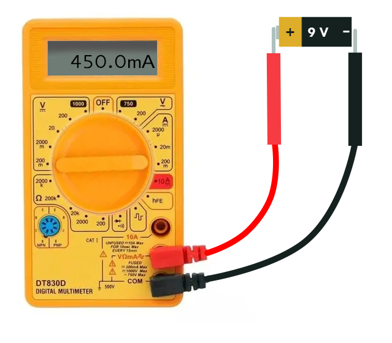
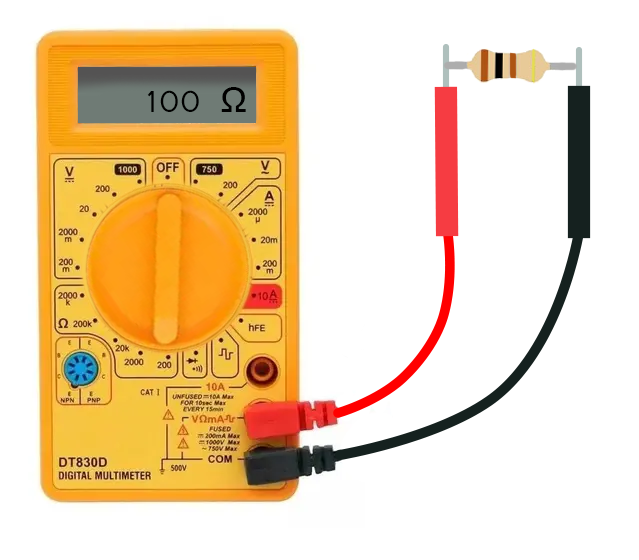

Um multímetro é um instrumento de medição elétrica usado para medir várias grandezas elétricas, como tensão, corrente e resistência. Ele pode ser utilizado para realizar testes de continuidade, verificação de diodos, transistores e outros componentes eletrônicos.
Os multímetros podem ser digitais ou analógicos e podem ser usados em vários campos, como eletrônica, engenharia elétrica, automotiva, entre outros. Eles são essenciais para a solução de problemas elétricos, bem como para a manutenção e reparo de equipamentos elétricos e eletrônicos.
Multímetro analógico e digital
Multímetro analógico
Um multímetro analógico é um tipo de instrumento de medição elétrica que usa um ponteiro e um mostrador para indicar o valor medido. Ele é composto por um conjunto de resistores, capacitores, diodos, bobinas e um ponteiro que se move em resposta à corrente elétrica que está sendo medida.
Ao conectar as pontas do multímetro aos pontos de medição, a corrente elétrica flui através dos componentes internos do multímetro, gerando uma deflexão do ponteiro que indica o valor da medição. O multímetro analógico é capaz de medir grandezas elétricas como tensão, corrente e resistência, além de ter recursos para medir outras grandezas elétricas.
O mostrador do multímetro analógico possui várias escalas de medição, permitindo que o usuário selecione a escala adequada para a grandeza elétrica que deseja medir. A precisão da medição é limitada pela resolução da escala selecionada.
Embora os multímetros digitais sejam mais precisos e mais fáceis de usar do que os analógicos, alguns profissionais preferem usar multímetros analógicos devido à sua capacidade de mostrar as variações de valores mais rapidamente e com mais detalhes, especialmente em medições de corrente elétrica ou flutuações de sinais. Além disso, alguns multímetros analógicos são mais resistentes e podem ser mais adequados para ambientes de trabalho com vibrações ou ruídos elétricos excessivos.
Um multímetro digital é um instrumento de medição elétrica que utiliza tecnologia eletrônica para medir grandezas elétricas, como tensão, corrente, resistência e capacitância. Ele exibe os valores medidos em um display de cristal líquido (LCD) com alta precisão e resolução.
Os multímetros digitais geralmente possuem um seletor rotativo que permite selecionar a grandeza elétrica a ser medida e a escala de medição adequada. Alguns modelos também possuem recursos adicionais, como medição de frequência, temperatura, teste de continuidade e verificação de diodos e transistores.
Ao conectar as pontas do multímetro digital aos pontos de medição, ele mede a corrente elétrica por meio de circuitos eletrônicos, que convertem a corrente em um valor digital e o exibe no display LCD. Os multímetros digitais geralmente possuem uma precisão maior do que os analógicos e possuem recursos de auto-ranging, que selecionam automaticamente a escala de medição adequada para o valor a ser medido.
Além disso, os multímetros digitais podem armazenar valores medidos em sua memória interna, permitindo que o usuário os visualize posteriormente. Eles também podem ter recursos de comunicação, como conexão Bluetooth ou USB, para transferência de dados para outros dispositivos.
Os multímetros digitais são amplamente utilizados em vários campos, como eletrônica, engenharia elétrica, automotiva, entre outros, devido à sua alta precisão e facilidade de uso. Eles são essenciais para a solução de problemas elétricos e para a manutenção e reparo de equipamentos elétricos e eletrônicos.
Escalas do multímetro
Os multímetros possuem diferentes escalas de medição para diferentes grandezas elétricas, a fim de que o usuário possa selecionar a escala apropriada para a medição a ser realizada. As escalas de medição do multímetro podem variar entre modelos e fabricantes, mas as escalas comuns incluem:
Tensão contínua (DCV)
mede a diferença de potencial elétrico em circuitos de corrente contínua, geralmente em volts (V). As escalas comuns incluem 200 mV, 2 V, 20 V, 200 V, 600 V.
Corrente contínua (DCA)
mede a corrente elétrica em circuitos de corrente contínua, geralmente em ampères (A). As escalas comuns incluem 200 µA, 2 mA, 20 mA, 200 mA, 10 A.
Resistência (Ω)
mede a resistência elétrica de um componente ou circuito, geralmente em ohms (Ω). As escalas comuns incluem 200 Ω, 2 kΩ, 20 kΩ, 200 kΩ, 2 MΩ, 20 MΩ.
Pontas de prova
Pontas de prova são os acessórios que acompanham o multímetro e que são usados para conectar o multímetro aos componentes elétricos ou circuitos que serão medidos. Essas pontas geralmente são compostas por duas partes: uma ponta metálica que é conectada ao multímetro e uma ponta isolante que é segurada pelo usuário.
As pontas de prova são projetadas para garantir uma conexão segura e precisa entre o multímetro e o componente elétrico ou circuito a ser medido. Elas são essenciais para realizar medições elétricas precisas e confiáveis, e geralmente vêm em diferentes tamanhos e formatos para se adequar a diferentes tipos de componentes elétricos e circuitos.
As pontas de prova também são projetadas para serem resistentes e duráveis, a fim de suportar as condições de uso em ambientes industriais ou em laboratórios de eletrônica. Elas são frequentemente destacáveis, permitindo que sejam facilmente substituídas se danificadas ou desgastadas pelo uso prolongado.
Agora que entendemos o básico, vamos ver como utilizá-lo?
⚠️
Antes de começar, é importante lembrar que um multímetro é uma ferramenta de medição que permite medir várias grandezas elétricas, mas é preciso ter cuidado para não danificá-lo ou causar curto-circuito.
Vamos começar!
Passo 1: Conheça o seu multímetro
Antes de começar a usá-lo, é importante conhecer as funções do multímetro. A maioria dos multímetros tem três funções principais: medir de tensão, corrente e resistência. Alguns multímetros mais completos também podem medir capacitância.
Certifique-se de que o multímetro esteja configurado corretamente para a medida que você deseja fazer. Você deve escolher a função apropriada antes de conectá-lo ao circuito.
Antes de usar o multímetro, você deve ter certeza de que ele está funcionando e que está configurado corretamente. Para fazer isso, siga estes passos:
Ligue o multímetro, e escolha a função apropriada.
Configure o multímetro para o valor máximo que você espera medir.
Conecte as pontas de prova aos terminais apropriados. O terminal vermelho é para medir a tensão, corrente ou capacitância positiva, enquanto o terminal preto é para medir a tensão, corrente ou capacitância negativa.
Verifique se as pontas de prova estão limpas e secas.
Passo 3: Medindo a Tensão (DDP)
Medir a tensão (DDP) é uma das funções mais comuns do multímetro e vamos utiliza-la com bastante frequência no curso. A seguir, estão os passos para medir a tensão usando um multímetro:
Ligue o multímetro e escolha a função de medição de tensão (V).
Escolha a escala de medição apropriada. Para medir a tensão em um circuito de 12V, por exemplo, escolha a escala de 20V ou a mais próxima.
Conecte o terminal vermelho do multímetro ao terminal positivo do circuito e o terminal preto ao terminal negativo do circuito.
Para medir a corrente elétrica em um circuito, siga estes passos:
Desligue a alimentação do circuito.
Escolha a função de medição de corrente (A) no multímetro.
Conecte o terminal vermelho do multímetro ao terminal positivo do circuito.
Conecte o terminal preto do multímetro à carga, ou seja, ao ponto em que a corrente está saindo do circuito.
Ligue a alimentação do circuito.
Leia o valor da corrente no display do multímetro.
⚠️
Importante: certifique-se de escolher a escala correta para a corrente que você espera medir. Caso contrário, o multímetro pode ser danificado ou você pode obter uma leitura imprecisa.
Passo 5: Medindo a Resistência
Para medir a resistência de um componente elétrico, siga estes passos:
Desligue a alimentação do circuito.
Escolha a função de medição de resistência (Ω) no multímetro.
Conecte as pontas de prova aos terminais do componente elétrico.
Leia o valor da resistência no display do multímetro.
⚠️
Certifique-se de que o componente elétrico esteja desconectado do circuito antes de fazer a medição.
Conclusão
Medir a tensão, corrente elétrica, resistência e capacitância usando um multímetro pode ser útil para diagnosticar problemas em um circuito elétrico. Certifique-se de escolher a função e escala corretas antes de medir e sempre desconecte as pontas de prova corretamente após a medição. Lembre-se de que é importante ter cuidado ao trabalhar com eletricidade para evitar acidentes.
{kind=link}


{kind=link}
{kind=link}
{kind=link}
{kind=link}
{kind=link}
{kind=link}